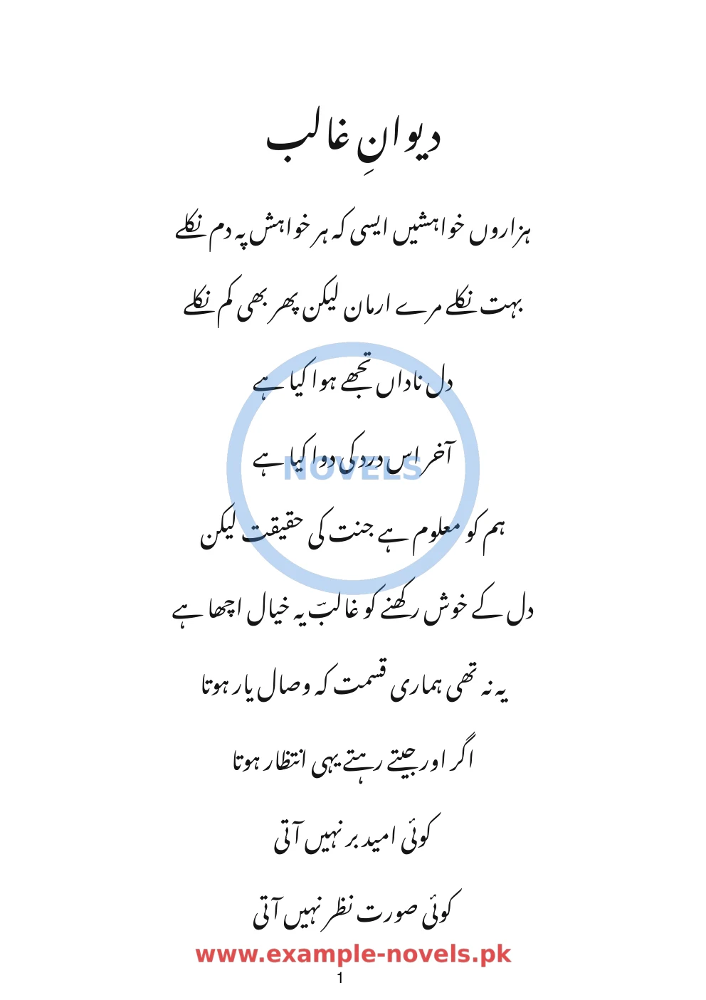
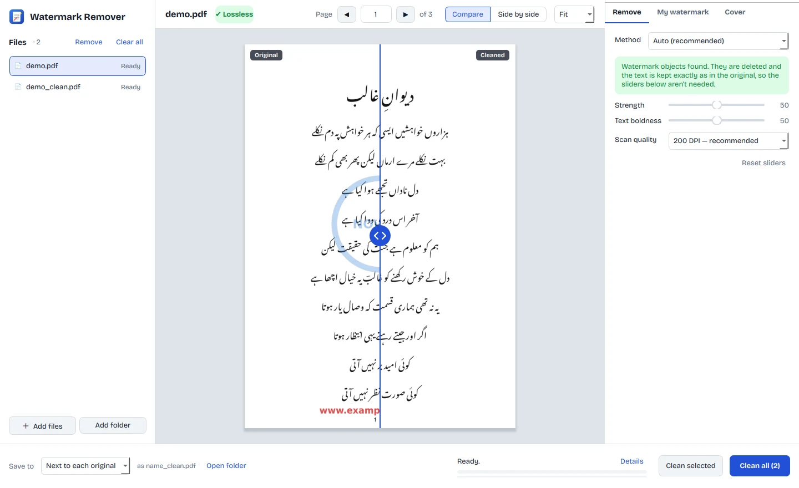

Remove the watermark. Keep the book.
واٹر مارک ہٹائیں، کتاب جوں کی توں رہے
A free Linux app that takes site URLs and logos off your PDFs and scanned pages. In most PDFs it deletes only the watermark, so the text, the Urdu script and the colours stay exactly as they were.

OriginalCleanedThree steps, no settings to learn
Open the app, give it your files, and it works out what kind of watermark each one has.
Add your files
Drop in PDFs or images, or a whole folder with its subfolders.
Check the preview
See the original and the result side by side, page by page, before saving anything.
Clean
Each file is saved next to the original as name_clean.pdf. Your originals stay as they are.

Made for books, not photos
Built for pages of dark text on light paper, like the Urdu novels that download sites stamp on every page.
Original text quality
In PDFs exported from Word or InPage, the watermark is a separate image. The app deletes it and leaves the text untouched, so you can still select it and the file often gets smaller.
Colours stay
Only images that repeat over the text on many pages are removed. Covers, pictures, headers and borders keep their colour.
Scanned books too
For scans, the app finds where the watermark sits across pages and cleans just that area. Two sliders adjust strength and text boldness.
Add your own watermark
Stamp your own text, in Urdu or any language, or your logo. Set its size, angle, opacity and position.
Design a new cover
Replace page 1 with your own image or colour, plus a title and author. The app remembers your last design for the next book.
Private by design
Everything runs on your computer. Nothing is uploaded, and you don't need an account or an internet connection.
Download
One file, no Python or other setup needed. Installing adds it to your app menu without asking for an admin password.
Download for Linux (x86_64)- Ubuntu 24.04, Linux Mint 22, Zorin OS 18 or newer
- Any 64-bit Linux with glibc 2.39 or later
- Windows and macOS versions aren't available yet
# unpack the download tar xzf WatermarkRemover-linux-x86_64.tar.gz cd WatermarkRemover-linux-x86_64 # add it to your app menu ./install.sh # or run it without installing ./WatermarkRemover/WatermarkRemover # remove it later ./uninstall.sh
Questions
Will the text look worse after cleaning?
Not for most PDFs. If the app shows “Lossless — original quality kept”, it only deleted the watermark objects and the text is the original. For scanned pages it rebuilds the image, and you can fine-tune the result with the Strength and Text boldness sliders.
Does it work with Urdu, Hindi or Arabic books?
Yes. The app removes the watermark without reading the text, so the language and script don't matter. Your own watermark and cover text can be in Urdu too.
Can it clean a whole folder of books at once?
Yes. Add a folder, choose an output folder if you like, and press Clean all. The folder structure is copied to the output.
My cover is in colour. Will it turn black and white?
No. In digital PDFs, pictures that appear only once are kept. With scans, tick “Keep this page unchanged” on any page you want left as it is.
Is there a Windows version?
Not yet. The app currently runs on Linux.
Can I remove any watermark I like?
Use it on documents you own or have permission to change. Watermarks often show who holds the rights to a book.